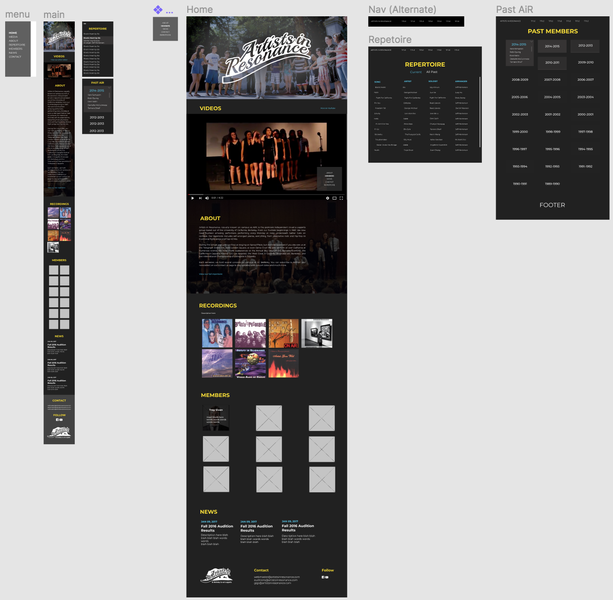

BerkeleyTime
BerkeleyTime is a web application for student, built by students. It allows students to easily search through 12000+ courses in the Berkeley catalog using different filters. Class enrollment is often a stressful time so BerkeleyTime relieves some of the stress by providing enrollment history, grade distributions, prereqs, section times, and much more all in one spot.

Technology
ReactJS / Django / HTML / CSS
Timeline
August 2017 - May 2018
My Role
BerkeleyTime is a team of about 12 people under the Office of the Chief Technology Officer in Berkeley's student government organization (ASUC). I joined in the beginning of my junior year as a full stack engineer while the website was going through a significant redesign and refactoring of the codebase. I helped lead the rewrite of the frontend codebase to ReactJS. I learned a lot about the fundamentals of React, and worked with very talented individuals. I'm so proud of the current team for seeing the redesign through and creating a better experience for thousands of students.
Innovative Design
Innovative Design is a creative student agency that aims to Make Berkeley Beautiful. The organization has graphic design, photography, and web design teams that take on requests from other student organizations pro bono. It also offers DeCals (Berkeley classes created and run by students) on design and photography.
Technology
HTML / CSS / Javascript / ReactJS / Sketch / Figma
Timeline
Jan 2017 - May 2018
My Role
I spent 3 semesters in Innovative Design, each semester on a web design team. During my last semester, I joined the Officer Board and lead my own web team. Keep scrolling to view some of the projects I worked on.
Semester 1
I had very little web design / development experience when I first joined Innovative Design. I learned a lot my first semester from the veterans on my team, used Sketch for the first time, and was introduced to ReactJS. Our client project was to redesign Berkeley's Association for India's Development website.
Semester 2
I was more confident in my development skills this semester, and worked on a redesign for a dance team at Berkeley named the Fei Tian Dancers. We used Figma for collaborative design work and React for the website.
Semester 3
My last semester I led a team of 8 students, from different backgrounds, with different skills. Every week, I prepared lessons on web design and development, created mini homeworks / projects, and guided my team to complete our client work. My sub team redesigned Berkeley's premier acapella group's website.
mocks for the redesign in Figma:
I owe it to Innovative Design for nurturing my web development skills and for opening my eyes to a world of design. Thank you for making Berkeley beautiful.
Mobile Developers of Berkeley
Mobile Developers of Berkeley (MDB) was the first student organization I joined at Berkeley. The organization puts members through a bootcamp where you learn how to create an app for either Android or iOS in just a couple of weeks. After the bootcamp, you are free to build your own mobile app with the goal of publishing it on the Google or Apple store. I came into this organization as a complete newbie to Android development. I learned a lot and I learned fast and came out with Version 1.0 and 2.0 of an Android app over the course of 2 semesters.
Technology
Android Studio, Google Maps and Google Places API, Firebase
Timeline
August 2016 - May 2017
My Role
I was on a team of 3, all of us pretty new to mobile design and development. From hours and hours of work came WingIt, an Android app that lets users experience spontaneous adventures anywhere, anytime. It creates a trip itinerary on the go, instead of planning the entire trip beforehand.

Our main objective was to create a seamless experience for the user that simulated a real-time adventure. Therefore we came up with the following goals:
- Minimal screens and user interaction - the app should do all the hard work
- Clean screen designs to not distract the user from the adventure
- Screen transitions should flow on top of one another to create a cohesive and seamless experience
- The app should be an assistant or right-hand to the user - the real world is the actual adventure
- Follow Material Design guidelines
If we ever wanted to release a Version 3.0, we hope to develop a cross-platform version of the app, and revamp the designs so that the users do not feel constrained or limited by the app. Some features we would look forward to:
- More flexibility when generating places: filter by transportation method, number of choices, categories, food preferences, etc.
- Easier navigation to a location
- Recommendations along your adventure
Thank you MDB for showing me the infinite possibilites I can pursue with computer science outside of schoolwork. My experience in this organization has inspired me to join other organizations and pursue my ambitions.